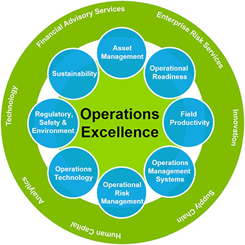

Operational Excellence(OE)
At Chevron, we're focused on safely delivering the energy needed to power human and economic progress worldwide.How do we do it across the world, day after day, year after year? How do we keep our more than 64,700 employees (including more than 3,200 service station employees) and 200,000 contractors healthy and safe each day? How do we protect the environment and the communities around us while operating reliably and efficiently?To meet these challenges, KSP has expanding systems that support a culture of safety and environmental stewardship that strives to achieve unequaled performance and prevent all serious incidents and fatalities. We call this Operational Excellence (OE), and it drives everything we do.
A KSP Culture based on ‘zero incidents and injuries.”Teaching the workforce to how to see safe behaviors and reinforce them, to identify and address safety. ABC Model - Your Choice, Your Behavior and Your Consequences. Consequences are shared by everyone.Working in a safety workforce is an essential thing. Here is where OE(operational excellence) meets IIF and OSPREY.Incident and Injury Free (IIF) environment in which genuine care and concern exists for the well being of ourselves and others. Mitigate against Risk - OSPREY
- O-Observing
- S-Safety
- P-Protects
- R-Resources the
- E-Environment and
- Y-You
Capital Stewardship and Organizational Capability
Capital stewardship - is investing in the best projects and executing them in and successful manner, safely, fast and at the lowest cost. Stewardship is responsibility for taking good care of resources entrusted to one. Achieving a world class results have to implement:
- A skilled workforce
- Learning & Innovation
- Recognition & Accountability
- World-Class Processes & Organization
- Technology & Partnerships
- Dynamic Leaders
Organizational Capability - is the ability of the organization to execute its strategies by supporting the skills of our workforce with essential processes,technologies and partnerships. World Class performance is based on:
- Decision Quality
- Behavior
- Project Execution
- Economic Evaluation
- Education
- Performance Measurement Systems